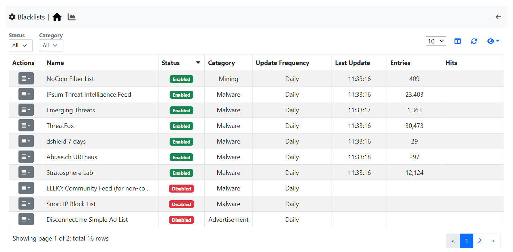
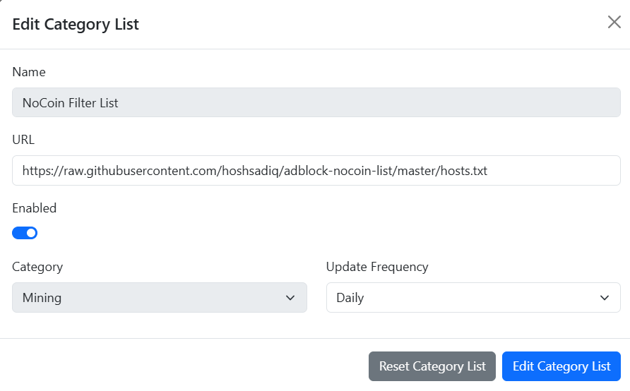

Черные списки
ntopng использует сторонние списки IP/доменов для обнаружения вредоносных хостов — списки категорий. Каждый список содержит список хостов, связанных с определенным категория протокола.
Примерами списков категорий являются черные списки вредоносных программ и хостов майнинга, которые используются ntopng для обнаружения вредоносных хостов и генерации оповещения.
Примечание
Проверьте Документация по хостам пользовательских категорий о способе назначения пользовательских хостов категориям ntopng.

Страница конфигурации списков категорий
На данный момент поддерживаются только некоторые встроенные списки. Пользовательские списки можно добавить в будущее. Списки периодически обновляются в зависимости от настроенных Частота обновления. Нажав на Обновить сейчас Кнопка позволяет принудительно обновить список. Число хостов В столбце указано количество загруженных хостов из указанного списка. Статус столбец указывает текущий статус списка:
Включено: список включен и будет использоваться ntopng
Неполноценный: список отключен и будет игнорироваться ntopng
Ошибка: при загрузке списка произошла ошибка. Подробности смотрите в журнале ntopng.
Нажав на Редактировать Кнопка позволяет редактировать частоту обновления списка и чтобы отключить список.


Настройте параметры списка категорий
Если список отключен, он больше не будет обновляться.
Пользовательские черные списки
В дополнение к объединенному списку категорий вы можете добавить свой собственный список категорий.
Под /usr/share/ntopng/httpdocs/misc/lists/builtin вы можете найти файлы черного списка, которые имеют ntopng. Ниже вы можете найти пример ожидаемого синтаксиса:
$:/usr/share/ntopng/httpdocs/misc/lists/builtin# cat nocoin.list
{"name":"NoCoin Filter List","format":"hosts","enabled":true,"update_interval":86400,"url":"https://raw.githubusercontent.com/hoshsadiq/adblock-nocoin-list/master/hosts.txt","category":"mining"}
Поддерживаются различные форматы (поле «формат» в файле конфигурации списка), включая:
ip: каждая строка содержит числовой адрес IPv4
хосты: каждая строка содержит символическое имя хоста
Пожалуйста, посмотрите файлы конфигурации, которые поставляются с ntopng, чтобы увидеть пример.
Чтобы не смешивать пользовательские файлы конфигурации со встроенными, ntopng ожидает, что они будут храниться в /usr/share/ntopng/httpdocs/misc/lists/custom
Если формат файла правильный, ntopng будет загружать списки при запуске или периодически в соответствии с указанной конфигурацией.